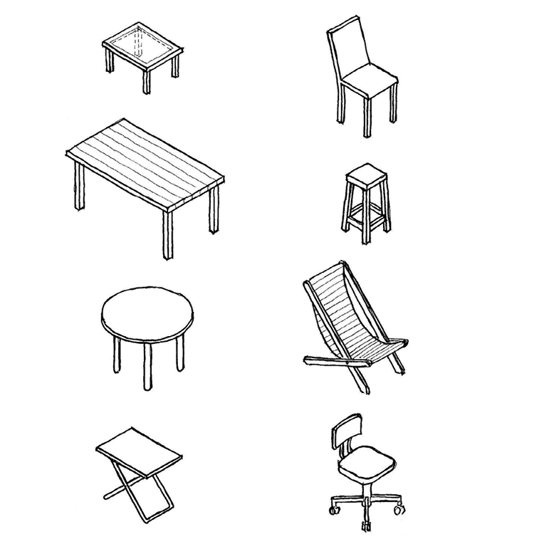
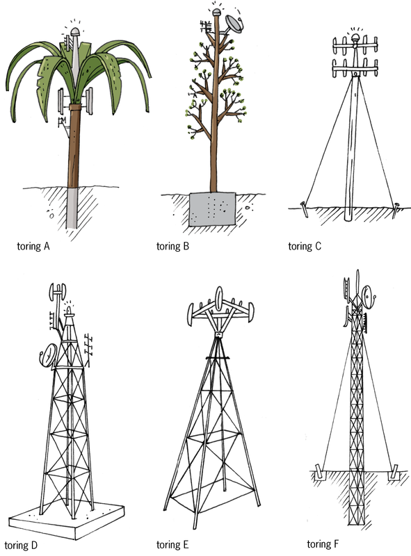
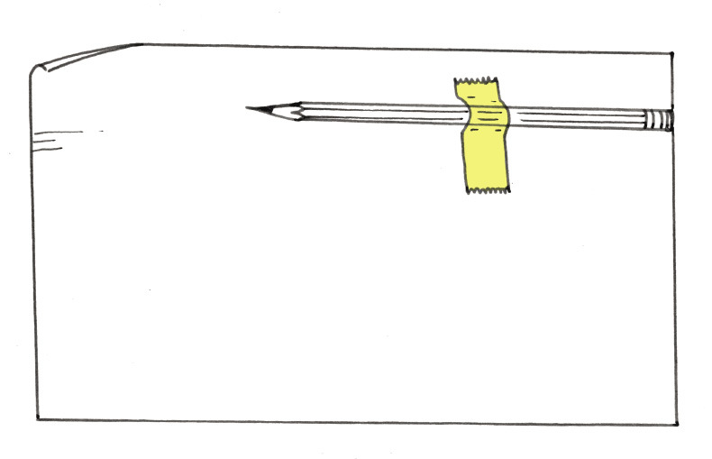
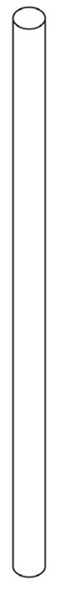
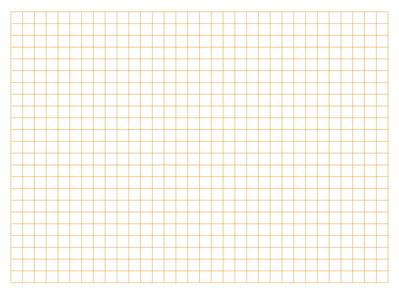
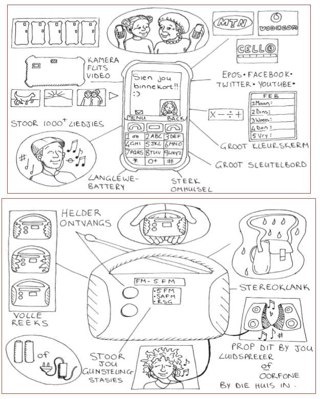

<div class="container">
  <div id="contents" class="col-md-12 main-content"><h1 xmlns="http://www.w3.org/1999/xhtml" id="toc-id-8">Dinge om te oorweeg</h1>


<p xmlns="http://www.w3.org/1999/xhtml" class="x--Body-opener">In hierdie hoofstuk gaan jy leer oor “ontwerpkwessies”. Ontwerpkwessies is dinge om aan te dink
wanneer goed soos ’n selfoontoring, ’n brug, ’n gebou of kragstasie ontwerp word. Ontwerpkwessies
sluit in die doel van die voorwerp of struktuur wat ontwerp word, die koste daarvan en hoe mense en
die omgewing daardeur beïnvloed sal word.
</p> 

<figure xmlns="http://www.w3.org/1999/xhtml">

<figcaption>Figuur 1</figcaption>
</figure>
<figure xmlns="http://www.w3.org/1999/xhtml">

<figcaption>Figuur 2</figcaption>
</figure>
<h2 xmlns="http://www.w3.org/1999/xhtml" id="toc-id-9">Hoekom lyk selfoontorings soos hulle lyk?</h2>

<h3 xmlns="http://www.w3.org/1999/xhtml" class="Head-investigation--after-b-head- para-style-override-5">Ondersoek ’n paar selfoontorings</h3>

<p xmlns="http://www.w3.org/1999/xhtml" class="x--Body-Text">Op die vorige bladsy kan jy na prente van verskeie
selfoontorings kyk.</p>
<ol xmlns="http://www.w3.org/1999/xhtml">
<li>
<p class="x--Body-investigation-hanging">Hoekom dink jy is toring A ontwerp om soos ’n boom te lyk?
</p>
<hr/>
</li>
<li>
<p class="x--Body-investigation-hanging">  Hoekom het toring C kabels, maar nie toring D nie?
</p>
<hr/>
</li>
<li>
<p class="x--Body-investigation-hanging">Hoekom sal toring A nie omtuimel nie, selfs al waai die wind sterk?
</p>
<hr/>
</li>
<li>
<p class="x--Body-investigation-hanging"> Hoekom het toring D ’n groot beton blok aan die onderpunt, maar staan toring
E vanself, sonder enige fondament?
</p>
<hr/>
<div class="note">
<p>As ’n lelike voorwerp in ’n mooi omgewing staan, sê ons dit veroorsaak 
<b>visuele besoedeling.</b>.</p>
<p> As ’n voorwerp maklik omval, sê ons dit is <b>onstabiel.</b>
</p>
<p> Die onderste deel van ’n toring, wat die gedeelte is waarop dit staan, word die 
<b>basis </b>genoem. </p>
</div>
</li>

<li>
<p class="x--Body-investigation-hanging"> Watter een van die torings op die vorige bladsy se 
basis is die breedste?
Hoekom is die toring ontwerp om so ’n breë basis te hê?
</p>
<hr/>
</li>
<li>
<p class="x--Body-investigation-hanging"> Watter van die torings is na jou mening meer onstabiel? Hoekom dink jy so?
</p>
<hr/>
</li>
</ol>
<h3 xmlns="http://www.w3.org/1999/xhtml" class="Head-investigation--after-b-head- para-style-override-5">Swaartepunt</h3>

<p xmlns="http://www.w3.org/1999/xhtml" class="x--Body-Text">Plak, soos hieronder gewys, jou potlood met 
kleefband aan ’n vel papier vas. Die
agterkant van jou potlood moet, soos gewys word, teen die rand van die papier wees.</p>

<figure xmlns="http://www.w3.org/1999/xhtml">

<figcaption>Figuur 3</figcaption>
</figure>
<p xmlns="http://www.w3.org/1999/xhtml" class="x--Body-text-1-3 para-style-override-39">Rol nou die papier om die potlood om ’n
lang buis met die
potlood daar binne te vorm. Plak die buis aan die buitekant
vas, waar die potlood se agterkant is, sodat dit nie oopmaak nie.</p>
<ol xmlns="http://www.w3.org/1999/xhtml">
<li>
<p class="x--Body-investigation-hanging--1-3-"> Probeer om die buis op die een punt te 
laat regop staan. Probeer dit met beide punte. Wat sien jy?</p>
<hr/>
<div class="note">
<p> As die meeste van die gewig van ’n voorwerp in die
onderste deel daarvan is, sê ingenieurs dat dit ’n 
<b>lae swaartepunt</b> het.</p>
<p> As die meeste van die gewig van ’n voorwerp in die
boonste deel daarvan is, sê ingenieurs dat dit ’n
<b>hoë swaartepunt</b> het.</p>
</div>
</li>


<li>
<p class="x--Body-investigation-hanging"> Watter voorwerp is meer stabiel: een met ’n 
lae swaartepunt of een met ’n hoë swaartepunt?</p>
<hr/>
</li>
<li>
<p> Watter toring op bladsy 146 het die hoogste swaartepunt?</p><figure>

<figcaption>Figuur 4</figcaption>
</figure>
<hr/>
<p class="x--Body-Text para-style-override-9">Die volgende is verskillende maniere om te voorkom dat torings maklik omval:
</p>

<div class="note">
<ul>
<li class="x--Body-text-bullet">Maak die swaartepunt laag. Een manier om dit
te doen is om die toring aan sy onderpunt aan ’n
swaar voorwerp vas te maak.</li>

<li class="x--Body-text-bullet">Anker die toring aan die grond met kabels.</li>

<li class="x--Body-text-bullet">Plant die toring diep in die grond.</li>

<li class="x--Body-text-bullet"> Gee vir die toring ’n breë basis.</li>
</ul>
</div>

</li>


<li>
<p> Kyk weer na die sketse van die ses torings.
Sê in elke geval watter
metode, of kombinasie van metodes, gebruik word om dit te stabiliseer.</p>
<hr/>
</li>
<li>
<p> Sterk fondamente voorkom dat torings omtuimel. Watter torings het
fondamente onder grondvlak om te help om hulle stabiel te hou?</p>
<hr/>
</li>
<li>
<p>Hoe verskil die ondergrondse fondamente van mekaar?</p>
<hr/>
</li>
<li>
<p>Van die torings is met soliede beton of veselglas gebou. Van die ander torings is
metaalstrukture. Hoekom dink jy word driehoeke in die metaalstrukture gebruik?</p>
<hr/>
</li>
</ol>
<h2 xmlns="http://www.w3.org/1999/xhtml" id="toc-id-10">Dinge waaroor die ontwerpers van torings dink</h2>

<h3 xmlns="http://www.w3.org/1999/xhtml">Watter vrae gaan jy vra?</h3>

<p xmlns="http://www.w3.org/1999/xhtml" class="x--Body-Text">Veronderstel daar moet ’n nuwe selfoontoring in ’n gebied sonder selfoondekking
gebou word. Die burgemeester van die plaaslike munisipaliteit in die gebied nooi
jou uit om hom te besoek en sê vir jou:
</p>

<p xmlns="http://www.w3.org/1999/xhtml" class="x--Body-story">
<i>“Ek het iemand nodig om ’n dokument oor die nuwe selfoontoring te skryf. Die
dokument sal gegee word aan ingenieurs wat die selfoontoring sal onwerp en
bou. Wanneer hulle dit lees, moet dit baie duidelik wees wat ons wil hê. Kan jy
so ’n dokument skryf?”
</i>
</p>

<p xmlns="http://www.w3.org/1999/xhtml" class="x--Body-investigation-hanging">Hy sê verder:</p>

<p xmlns="http://www.w3.org/1999/xhtml" class="x--Body-story">
<i>“Jy het inligting nodig voordat jy die dokument sal kan skryf.
Om daardie
inligting te kry moet jy vrae vra. Watter vrae gaan jy vra: aan my, én ’n paar
ander mense in die gemeenskap?”
</i>
</p>

<p xmlns="http://www.w3.org/1999/xhtml" class="x--Body-Text">Skryf die vrae neer wat jy dink jou sal help om die inligting wat 
jy nodig het te bekom.</p>
<hr xmlns="http://www.w3.org/1999/xhtml"/>
<h2 xmlns="http://www.w3.org/1999/xhtml" id="toc-id-11">Gee duidelike instruksies</h2>

<h3 xmlns="http://www.w3.org/1999/xhtml">Skryf ’n ontwerpopdrag en spesifikasies vir skoolbanke</h3>

<p xmlns="http://www.w3.org/1999/xhtml" class="x--Body-Text">Veronderstel jy het die verantwoordelikheid om 100 nuwe skoolbanke vir die
skool te bestel. Die banke sal by ’n meubelfabriek gemaak word. Dit is die eerste
keer dat hierdie fabriek skoolbanke gaan maak. Die mense by die fabriek het geen
ondervinding van die maak van skoolbanke nie, daarom moet jou instruksies aan
hulle baie duidelik wees.
</p>

<p xmlns="http://www.w3.org/1999/xhtml" class="x--Body-indent">Jy gaan binnekort ’n dokument vir die fabrieksbestuurder skryf, sodat hy kan
weet hoe die skoolbanke moet lyk, hoe groot en hoe sterk hulle moet wees, en van
watter materiale hulle gemaak moet word. Voordat jy dit doen, ondersoek eers jou
eie skoolbank in die klas om jou te help om oor die nuwe skoolbanke te besluit.
Die nuwe skoolbanke hoef nie presies soos jou skoolbank te wees nie. Jy kan
skoolbanke voorstel wat van joune verskil.
</p>
<ol xmlns="http://www.w3.org/1999/xhtml">
<li>
<p class="x--Body-investigation-hanging para-style-override-1">
Ondersoek nou jou bank en dink na oor hoe jy wil hê die nuwe
skoolbanke
gemaak moet word. Maak aantekeninge hieronder en maak sommer ook ’n
paar vryhandsketse.
</p>

<p class="x--Body-Text">’n Dokument soos die een wat jy nou gaan skryf word ’n
<b>ontwerpopdrag
</b> genoem en die antwoord op jou vrae word
<b>spesifikasies</b> genoem.</p>
</li>

<li>
<p class="x--Body-investigation-hanging">Skryf die dokument wat aan die fabrieksbestuurder gestuur gaan word op ’n
los papiervel. Jou dokument moet een of meer tekeninge insluit. Skryf ook die
afmetings van die skoolbank neer.
</p>
</li>

<li>
<p class="x--Body-investigation-hanging"> Maak, in die spasie hieronder, 
’n 3D-skuinstekening van die skoolbank wat jy
gemaak wil hê.
</p><p class="x--Body-Text">

</p>
</li>


</ol>
<h3 xmlns="http://www.w3.org/1999/xhtml" class="Head-investigation--after-b-head- para-style-override-5">Beoordeel en verbeter jou dokument</h3>

<p xmlns="http://www.w3.org/1999/xhtml" class="x--Body-Text">Lees weer jou ontwerpopdrag en spesifikasies en beantwoord daarna die volgende vrae:
</p>
<ol xmlns="http://www.w3.org/1999/xhtml">
<li>
<p class="x--Body-investigation-hanging--1-3-">  Sê jou dokument of die pote van die skoolbank van
hout, metaal of plastiek gemaak moet word?</p>
<div class="aside">
<p class="Body-box-no-indent">In plaas daarvan om jou eie dokument te beoordeel kan jy
’n ander leerder se dokument beoordeel. Jou onderwyser sal dit reël.</p>
</div>
</li>

<li>
<p class="x--Body-investigation-hanging">Sê jou dokument hoe breed die skoolbank bo-op moet wees?
</p>
<hr/>
</li>
<li>
<p class="x--Body-investigation-hanging"> Sê jou dokument hoe hoog bo die vloer die skoolbank se skryfoppervlak moet
wees?
</p>
<hr/>
</li>
<li>
<p class="x--Body-investigation-hanging"> Sê jou dokument hoe grof of glad die bokant van
die skoolbank se skryfoppervlak moet wees?</p>
<hr/>
<p class="x--Body-Text para-style-override-9">Probeer dink aan ander inligting wat die 			fabrieksbestuurder dalk nodig het, en wat
nie in jou dokument verskaf word nie.
</p>
</li>


<li>
<p class="x--Body-investigation-hanging para-style-override-1">
Herskryf jou ontwerpopdrag en spesifikasies hieronder en op die bladsy
daarna. Sluit ’n artistiese enkel verdwynpunt tekening van die skoolbank op ’n
afsonderlike papiervel in.
</p>


</li>

</ol>
<h3 xmlns="http://www.w3.org/1999/xhtml" class="Head-investigation--after-b-head- para-style-override-5">Nog ’n ontwerpopdrag en spesifikasies</h3>

<p xmlns="http://www.w3.org/1999/xhtml" class="x--Body-Text para-style-override-1">Skryf in die spasie hieronder ’n ontwerpopdrag en spesifikasies vir ’n FM-radio of
’n selfoontoring neer.
</p>


<figure xmlns="http://www.w3.org/1999/xhtml">
 

<figcaption>Figuur 5</figcaption>
</figure>
<h3 xmlns="http://www.w3.org/1999/xhtml" class="x--Head-investigation">Volgende week</h3>
<p xmlns="http://www.w3.org/1999/xhtml">In die komende weke gaan jy ’n model van ’n selfoontoring ontwerp en bou.</p>


  </div>
</div>